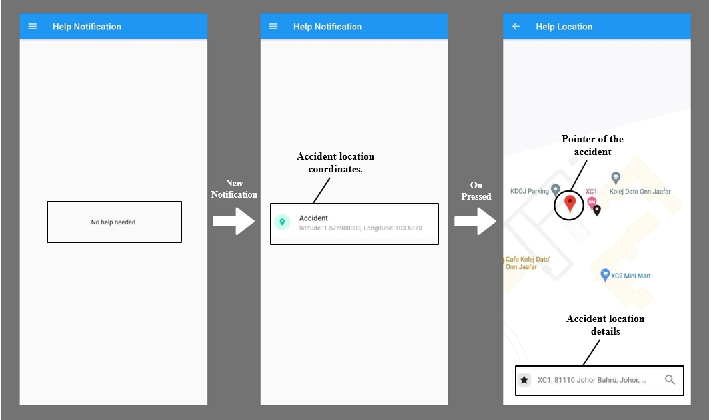

Save Me
Accident Alert & Notification System
Project Scope
(a) Emergency responses to the rescue. (b) Mobile app provides the notification of incident. (c) Mobile app shows the location of the incident.A short description
This project's primary objective is to reduce traffic fatalities. If response time is shortened, fatalities will eventually decrease. Thus, the project's sole significance is reflected in its name, which is alert and notification.
Technology Implemented
Software
- Dart-Flutter (mobile application)
- Firestore (database)
- Visual Studio Code
- Arduino IDE
Hardware
- NODEMCU ESP32
- GY-NEO6MV2 Flight Control GPS Module
- 5VDC HC-SR04 Ultrasonic Sensor
- 3-Axis Accelerometer
- Buzzer-PCB Mount
Use Cases of the System
| Use Case | Description |
|---|---|
| (I) Sign Up | This use case describes when a new user tries to use the application feature. |
| (II) Sign In | This use case is the follow up of the successful registration to the application. |
| (III) Accident Location | This use case describes the accident location that the user sees on the application. |
| (IV) Accident Notification | This use case describes the accident notification that the user receives on the application. |
| (V) Alert | This use case is mainly on the hardware part, it describes the alert that the driver will receive if the driver crosses the safety limit threshold. |
Hardware Description
The NodeMCU is implemented on WI-FI which is why the first and foremost job is to provide connection to the controller. As soon as the controller receives the connection the GPS sensor starts looking for satellite, through which the GPS sensor will determine the incident location. The alert is generated entirely within the device; no external application is required. When the ultrasonic sensor detects a certain distance between the rider car and the car ahead or any obstacle ahead, the sensor activates the buzzer, which begins emitting sounds to alert the driver. The driver can disable the alert by switching it off or simply increasing the distance between the cars or the obstacle. While the GPS sensor generates location data via satellite, the real hero behind the curtain is the 3-axis accelerometer. The accelerometer continuously records the values of the XYZ axis. The threshold value for each axis is determined by calculating the three-axis value of the UTM road. Following that, the application receives the location via a push notification, which the user can view.
Software Description
In the mobile android application the location is displayed on the map coordinates. However, notification will be the first one to be carried to the application before the location can be seen. The process is shown in figure 4, where the snaps from the left is considered as the first to start then carry on until the very right of the figure. On the first snap the application is on the homepage before the arrival of notification. Later snap depicts the arrival of the notification which carries the coordinates of the location. After pressing upon the notification, the later snap will be visible on the application and it will provide the accident location details as well as a pointer.